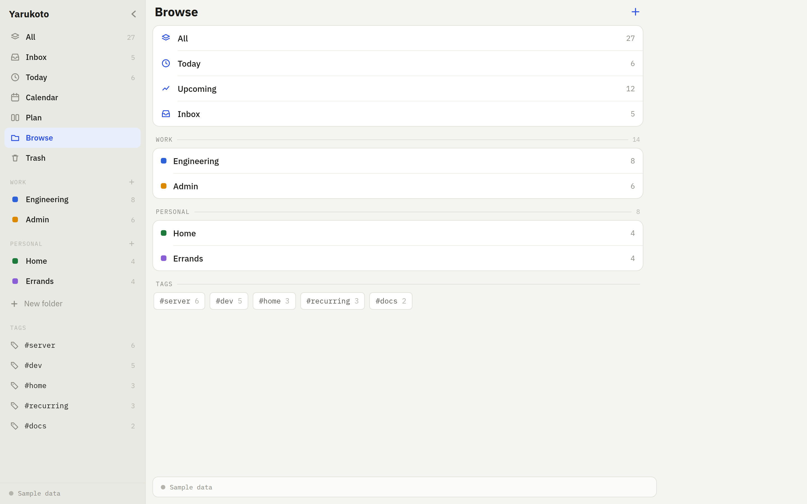
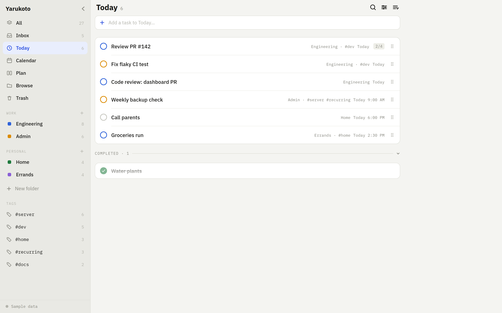

Your tasks, on your server.
One container, one SQLite file. The server serves both the API and the web client, so a single docker compose up gives you a working instance — and the same codebase builds the iOS and Android app.
Your data never leaves your server.
- No accounts
- One shared access token.
- Offline-tolerant
- Edits queue and push later.
- Web + mobile
- One Expo codebase.
- Runs on a NAS
- amd64 and arm64 images.



Type the task. It parses the rest.
The due date and time, the #tag, the !priority and the ~list come out of one line. Anything unrecognized stays as the title, and the chips show you what was understood before you commit.
- Subtasks, notes, tags, priorities, due dates and times.
- Per-view grouping and sort, synced across devices.
- Soft delete — restore from Trash, or delete forever.
Four ways to look at the same tasks
Every view is a real URL — /today, /inbox?listId=… — so a reload stays where you were, Back retraces where you've been, and a filtered list is a link you can bookmark.
Up in three commands
Requires Docker with Compose v2. The token is the only credential, so generate a real random one. Your database lives in ./data on the host and survives rebuilds.
On a Synology NAS, use docker-compose.synology.yml in Container Manager — it pulls the prebuilt ghcr.io/wyne/yarukoto image for amd64 and arm64 instead of building on the NAS.
git clone https://github.com/wyne/yarukoto.git cd yarukoto # the only credential — make it random echo "YARUKOTO_TOKEN=$(openssl rand -hex 32)" > .env docker compose up -d # then open http://localhost:8080 curl -fsS localhost:8080/api/v1/health
That command reads this docker-compose.yml, checked into the repo root:
services:
yarukoto:
build:
context: .
dockerfile: server/Dockerfile
restart: unless-stopped
ports:
- "8080:8080"
environment:
# openssl rand -hex 32
YARUKOTO_TOKEN: ${YARUKOTO_TOKEN:?set a long random token in .env}
PORT: 8080
DATABASE_PATH: /data/yarukoto.db
TRASH_RETENTION_DAYS: 30
HISTORY_REVISIONS_PER_TASK: 50
volumes:
- ./data:/data
Updating is git pull && docker compose up -d --build. ./data is untouched by rebuilds.
Against a hosted todo app
| Yarukoto | Hosted service | |
|---|---|---|
| Where the data lives | One SQLite file you can copy | Someone else's database |
| Cost | A container on hardware you own | Per month, per feature tier |
| Accounts | One shared token, no sign-up | Email, password, session |
| Offline | UI never waits on the network | Varies; often read-only |
| If it shuts down | It doesn't — you're running it | Export and start over |
Working and usable, but young
Worth knowing before you rely on it. Single-user by design — one shared access token, no accounts.
One token, no user accounts
Anyone with the token has full access. A personal-instance design, not multi-tenant.
Concurrent reorders can fight
Ordering is one global value under last-write-wins. Everything else merges cleanly per record.
Task history has no UI
Snapshots are captured from day one, but reading them means calling the endpoint directly.
No reminders, no tests yet
Reminders need push tokens and a scheduler. There's no automated test runner so far.
Try it before you host it.
Sample data mode runs the whole app client-side — no server needed. Everything stays on the device and resets when you reload.